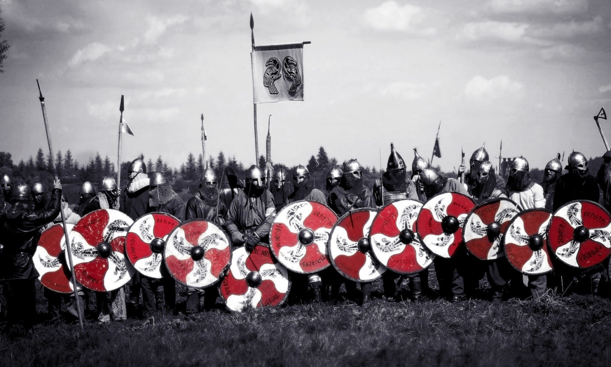
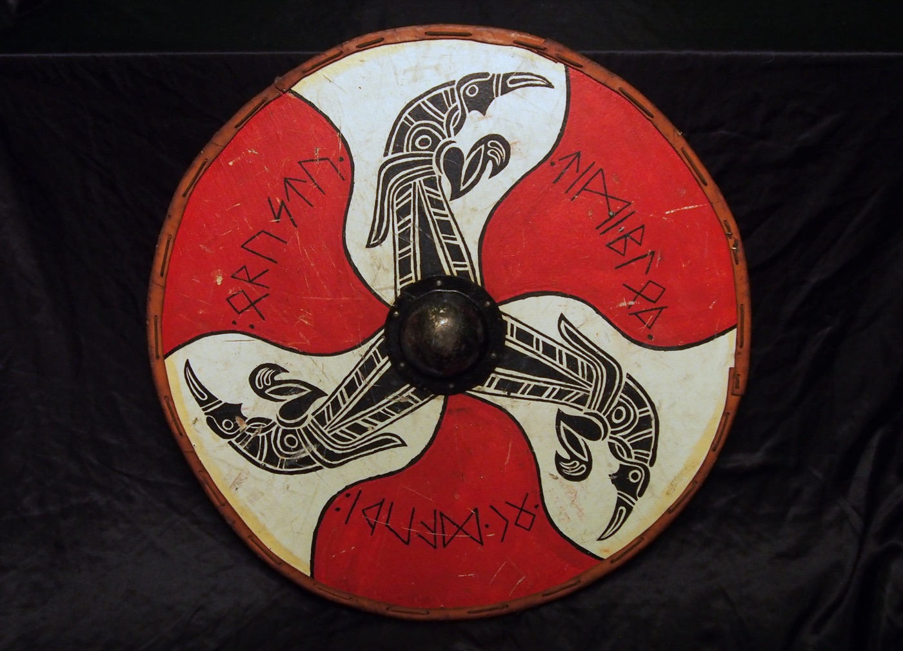
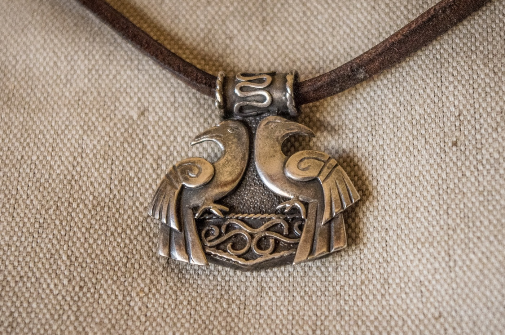
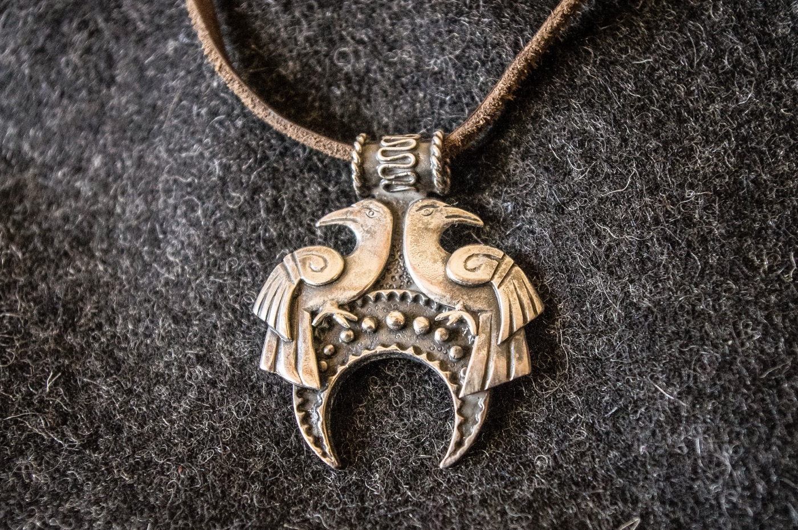

O nas
Historia
Bractwo Wojowników Kruki zostało założone w 2000 roku.
Kruczy Sztandar

Zapewne widzieliście go już na wielu zdjęciach lub na żywo. Spotkaliśmy się z opiniami (zupełnie bezpodstawnymi), że Kruki na sztandarze mają wredne spojrzenie. Odnosimy wrażenie, że w bitwie zazwyczaj lepiej bawią się ludzie, którzy mają go po swojej prawej lub lewej stronie, niż naprzeciwko.
Krucza Tarcza

Od 2005 r. wprowadziliśmy nowy wzór tarczy wspólny dla całej drużyny. Czarne kruki ułożone są w symbol solarny, pozostałe barwy to czerwień i biel, gdyż chcemy podkreślić naszą narodowość. Na tarczy runami w języku old norse widnieje wypisane nasze zawołanie bitewne: Wojny Czas! Krew i Śmierć!
Po tym nas poznacie
Kruczy Wisior
Zwany potocznie Kruczorami albo Kruczą Blachą. Jest to nasz znak, wyróżniający wojowników, którzy uczestniczyli w bitwie i dobrze się w niej spisali. Od tego momentu wojownik ma prawo do drużynowego imienia, noszenia Kruczorów i do umieszczenia jego zdjęcia w sekcji Wojownicy -> „Blachowi”. Kobiety z drużyny nie muszą się tyle starać by móc go nosić, więc to prawda, że nie ma równouprawnienia.

